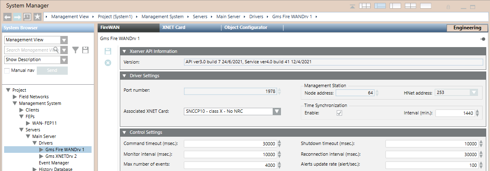

Fire WAN Driver Reference
This section provides some reference information about the Fire WAN driver configuration parameters.
For a step-by-step guide to the Fire WAN driver configuration, see the workflow in Configuring a Fire WAN.
Fire WAN Driver Configuration Parameters
In Engineering mode, the FireWAN tab of the Fire WAN driver node provides the Xserver API Information expander, to display the interface version, the Driver Settings, to display and set the driver parameters, and the Control Settings expander, to display and adjust technical parameters.
The Xserver API Information expander shows version information about the currently connected X-Server communication interface. This information is acquired as soon as the internal connection is established between the driver and the server software. The information string includes:
- API (Application Program Interface for the X-Driver) version, build number, and date.
- Service (server software component) version, build number, and date.
The Driver Settings expander includes the following parameters:
- Port: 1978 (fixed setting).
- Associated XNET Card: The communication card that is used by the driver.
NOTE: You must configure the previous fields, save and then start the driver before being able to select the associated XNET card. - Node address: The address of the management station in the XNET, fixed to 64.
- HNET address: The address of the management station in the HNET, fixed to 253.
- Time Synchronization: This check box can Enable the station to synchronize the networked panels with the current date and time.
Interval: Value in minutes. The default is 1440 (24 hours).
NOTE: The time synchronization also occurs when you manually adjust the clock time on the management station or upon daylight saving time switches.
The Control Settings expander includes the following parameters:
- Command timeout: Value in milliseconds.
NOTE: The default setting is 30,000. You may need to change it in case of a special configuration or if instructed by technical support, if the driver reports a command failure and generates an error log. - Monitor interval: Value in milliseconds.
NOTE: The default setting is 10,000. You may need to change it in case of a special configuration or if instructed to by technical support, if the XNET control units reports a disconnection from the Desigo CC management station. - Max number of events: This value defines the maximum numbers of events handled by the driver.
NOTE: The default setting is 4000. You may want to change it in case of a special configuration or if instructed to by technical support. - Shutdown timeout: Value in milliseconds.
NOTE: The default setting is 10,000. You may need to change it in case of a special configuration or if instructed to by technical support, if the driver generates a shutdown error log in case this timeout expires. - Reconnection interval: Value in milliseconds.
NOTE: The default setting is 30,000. You may need to change it in case of a special configuration or if instructed to by technical support, to modify the delay between the attempts of the XNET driver to reconnect after a communication failure. - Alert Update Rate: This value indicates the maximum numbers of events per second handled by the driver.
NOTE: The default setting is 100. You may need to change it in case of a special configuration or if instructed to by technical support.
